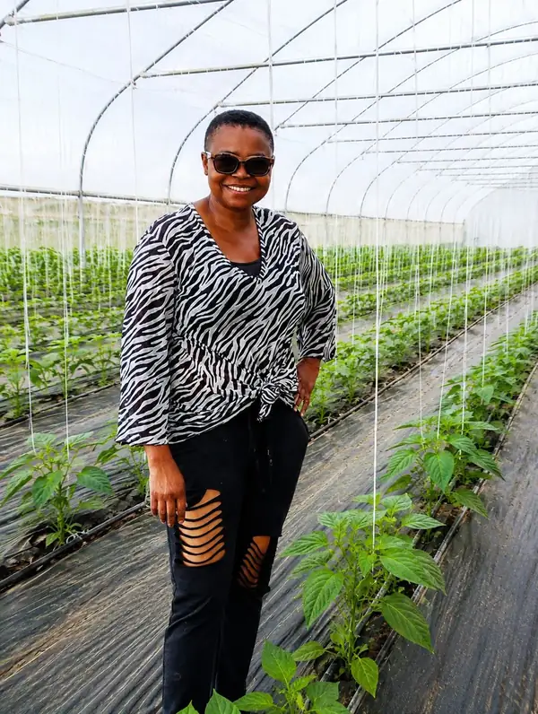

Hi, I'm Ada.
Nurse. Farmer. Entrepreneur. I help people reinvent themselves and build wealth in Africa with confidence.

My résumé in Africa so far
Since moving back to Nigeria, I've built Manna Farms, a commercial farm, and founded FarmLog by Manna Farms, an AgriTech platform that helps farmers keep records, track expenses and sales, and manage their businesses.
I've consulted with members of the African diaspora who are planning to move back, start a business or invest in Africa. I've also created beautiful short-stay apartments where people returning for a visit can feel at home.

My team and I have organized community health fairs that brought screenings closer to residents, and agricultural fairs where farmers could learn modern farming practices, meet buyers and share what works with one another.
What I've learned
I came back with more than 20 years of experience in healthcare. In Nigeria, I found ways to put that experience to work in my community, and discovered new ways to earn a living.
Building here has come with challenges. I've had to learn how to find buyers, earn trust and make the numbers work. And I've seen how much opportunity opens up when you listen to people and understand what would make their lives or businesses better.
If you've been thinking about moving back to Africa, what could you build with the experience you already have?
Work with me
Thinking about investing or building a business in Africa? In an African Investment Strategy Consultation, we look at your goals, your budget and your options, so your next step is a plan and not a gamble.
Where to start
- Take the free readiness quiz to see where you stand.
- Read the 2026 checklist for moving back to Africa.
- Browse the workbooks when you're ready to plan.
- Book a consultation for a personal investment strategy.